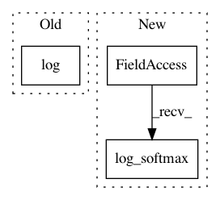

d709034be42c47a190f3e98e87286b142f67376e,clairvoyante/clairvoyante_v2.py,Clairvoyante,_buildGraph,#Clairvoyante#,29
Before Change
self.YIndelLengthSoftmax = YIndelLengthSoftmax
loss1 = tf.reduce_sum(tf.pow(YBaseChangeSigmoid - tf.slice(YPH,[0,0],[-1,self.outputShape1[0]]), 2))
loss2 = -tf.reduce_sum(tf.log(YZygositySoftmax) * tf.slice(YPH, [0,self.outputShape1[0]], [-1,self.outputShape2[0]]))
loss3 = -tf.reduce_sum(tf.log(YVarTypeSoftmax) * tf.slice(YPH, [0,self.outputShape1[0]+self.outputShape2[0]], [-1,self.outputShape3[0]]))
loss4 = -tf.reduce_sum(tf.log(YIndelLengthSoftmax) * tf.slice(YPH, [0,self.outputShape1[0]+self.outputShape2[0]+self.outputShape3[0]], [-1,self.outputShape4[0]]))
loss = loss1 + loss2 + loss3 + loss4
After Change
YZygosityCrossEntropy = tf.nn.log_softmax(YZygosityLogits)\
* -tf.slice(YPH, [0,self.outputShape1[0]], [-1,self.outputShape2[0]])
loss2 = tf.reduce_sum(YZygosityCrossEntropy)
YVarTypeCrossEntropy = tf.nn.log_softmax(YVarTypeLogits)\
* -tf.slice(YPH, [0,self.outputShape1[0]+self.outputShape2[0]], [-1,self.outputShape3[0]])
loss3 = tf.reduce_sum(YVarTypeCrossEntropy)
YIndelLengthCrossEntropy = tf.nn.log_softmax(YIndelLengthLogits)\
In pattern: SUPERPATTERN
Frequency: 3
Non-data size: 3
Instances
Project Name: aquaskyline/Clairvoyante
Commit Name: d709034be42c47a190f3e98e87286b142f67376e
Time: 2017-08-13
Author: rluo5@jhu.edu@schatz-bigmem.cm.cluster
File Name: clairvoyante/clairvoyante_v2.py
Class Name: Clairvoyante
Method Name: _buildGraph
Project Name: tensorflow/models
Commit Name: 3c5330d8130ec7e03e5df28b199ab0357b559301
Time: 2019-07-24
Author: saberkun@users.noreply.github.com
File Name: official/bert/bert_models.py
Class Name: BertPretrainLayer
Method Name: call
Project Name: PacktPublishing/Deep-Reinforcement-Learning-Hands-On
Commit Name: 303122a125dc50d3116f64bedbcfd7fe14d4f51c
Time: 2017-12-01
Author: max.lapan@gmail.com
File Name: ch09/02_cartpole_pg.py
Class Name:
Method Name: